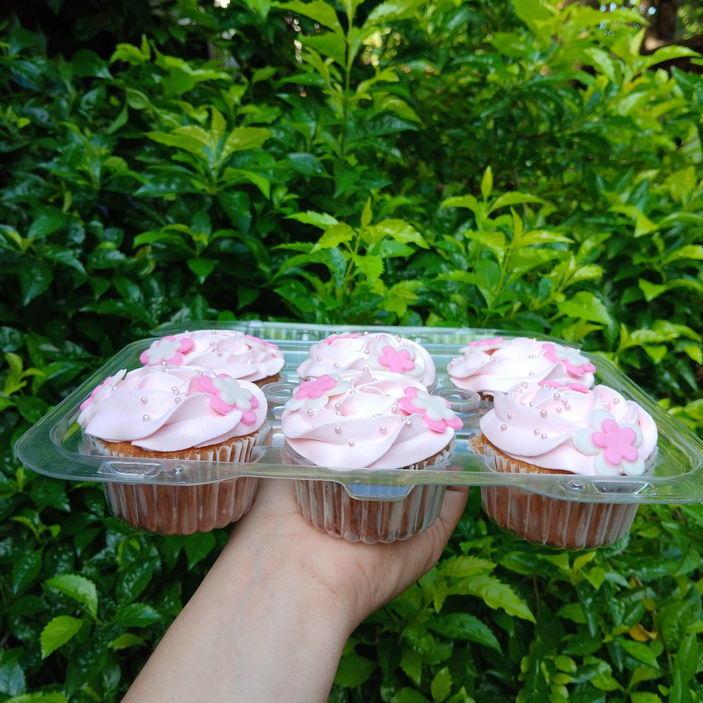
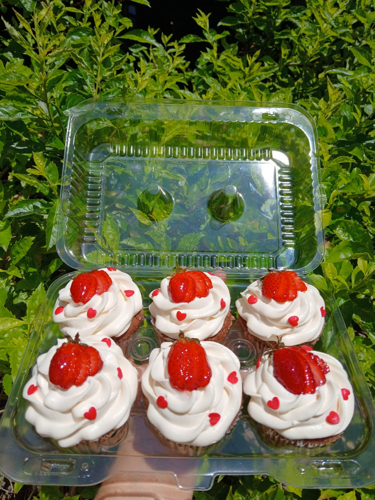
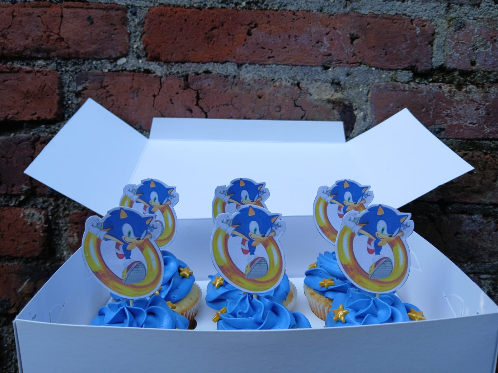
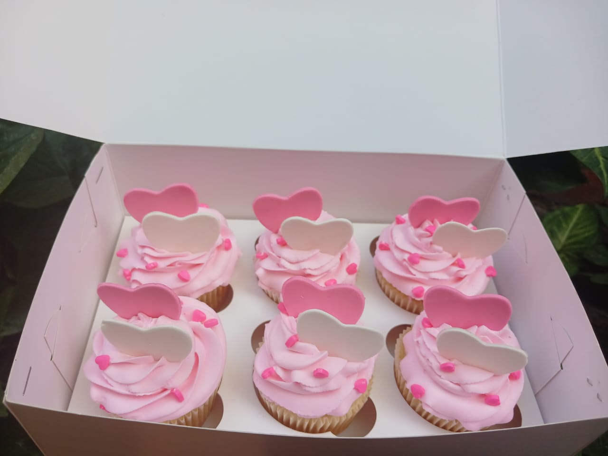
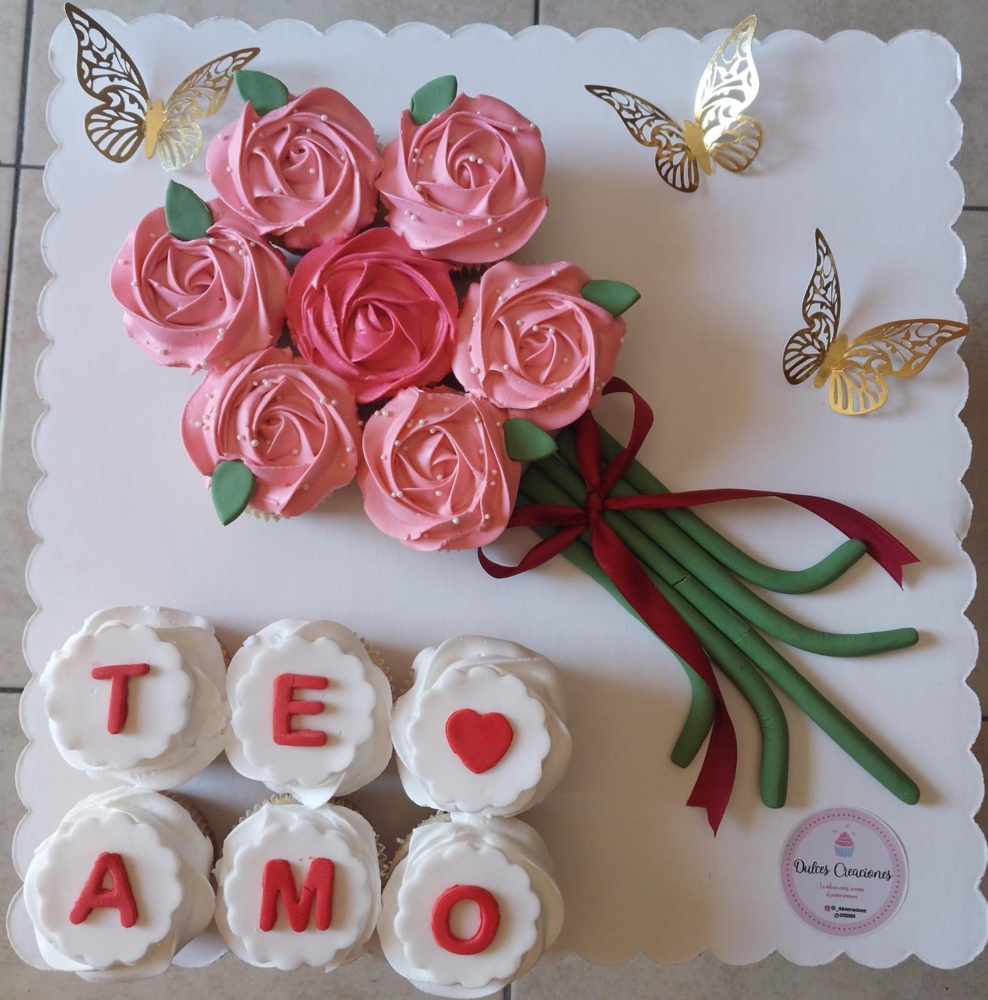
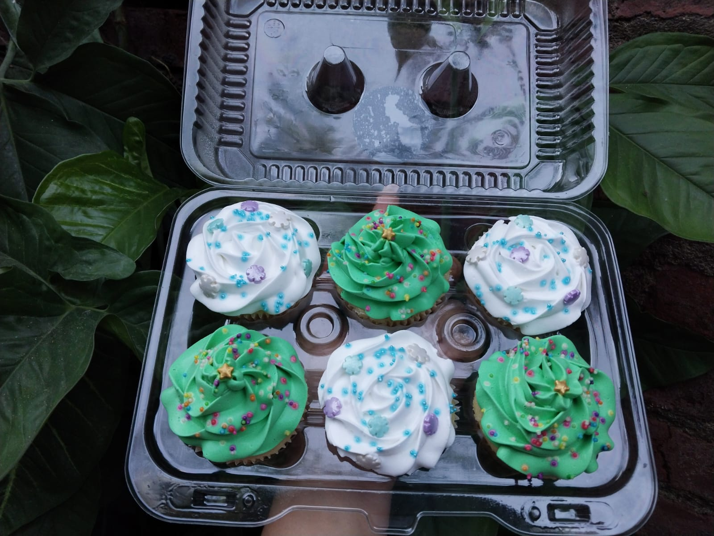

Cupcakes “Dulce Corazón Rosa”
Elegantes cupcakes en rosa pastel con decoraciones en forma de corazón y mariposas, ideales para baby showers o celebraciones femeninas.

Elegantes cupcakes en rosa pastel con decoraciones en forma de corazón y mariposas, ideales para baby showers o celebraciones femeninas.

Cubiertos con crema chantilly y fresas frescas, estos cupcakes son perfectos para un antojo frutal y delicioso.

Dulces cupcakes decorados en tonos azules con tiernos toppers de cigüeña, ideales para celebrar la llegada de un niño.

Tiernos cupcakes con crema rosada y corazones, ideales para un detalle romántico o celebrar a una persona especial.

Una combinación perfecta: cupcakes con letras que forman "TE AMO" acompañados de una hermosa decoración floral hecha en crema.

Con decoraciones en tonos verdes y blancos, estos cupcakes recuerdan la frescura de un bosque, ideales para fiestas temáticas o cumpleaños.